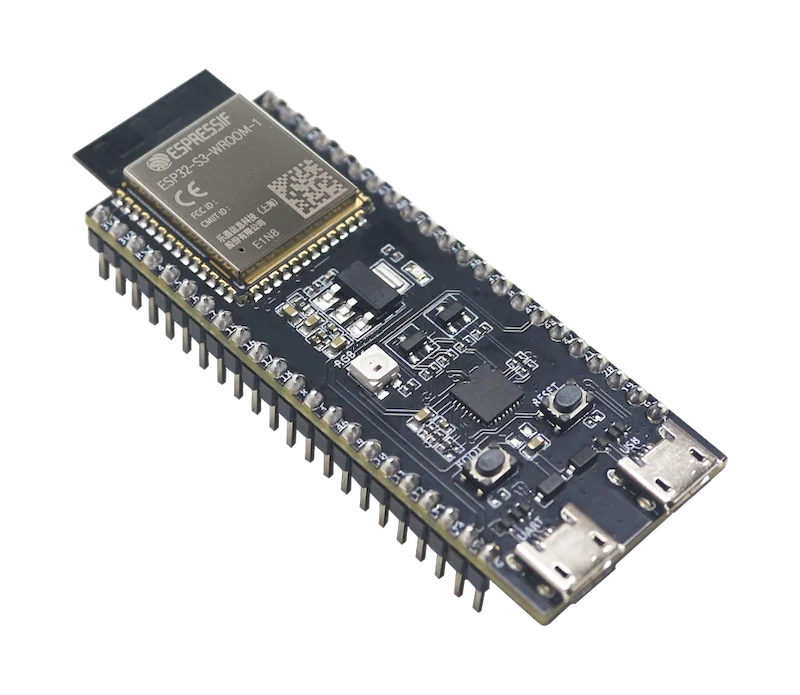

Rotor, disco e imanes
Geometría, equilibrado, polaridad, fijación y protección mecánica del rotor experimental.
PendienteProyecto experimental
Guía visual, paso a paso, para construir, cablear, probar y presentar la maqueta.
Esta web es el manual vivo del proyecto. Cada capítulo se incorpora cuando sus piezas, decisiones y comprobaciones están suficientemente claras para que Sara no tenga que adivinar el siguiente paso.

Índice de capítulos
Reconocer las piezas, controlar envíos, preparar el tablero y separar lo decidido de lo pendiente.
Disponible Capítulo 1Extensión, entrada de red, bornes de la fuente, protección y comprobaciones antes del primer encendido.
Disponible Capítulo 2Protección DC, cableado de baja tensión, resguardo y primera puesta en movimiento sin rotor.
DisponibleGeometría, equilibrado, polaridad, fijación y protección mecánica del rotor experimental.
PendienteMolde, cobre AWG28, conteo de espiras, derivaciones, continuidad y montaje ajustable.
PendienteCuatro diodos 1N5818, orientación, protoboard, salida DC y resistencias de prueba.
PendienteSoldadura, alimentación, bus I2C, medida de tensión/corriente y comprobación de conexiones.
PendienteTCRT5000 o KY-003, soporte, señal de referencia y cálculo de revoluciones por minuto.
PendientePrograma de la ESP32, monitor serie, calibración y registro ordenado de medidas.
PendientePlan de ensayos, variables, tablas de resultados y comparación de configuraciones.
PendienteDiagnóstico paso a paso cuando el motor no gira, no hay tensión o las medidas no cuadran.
PendienteCómo explicar el objetivo, el montaje, la seguridad, los resultados y las mejoras futuras.
Pendiente